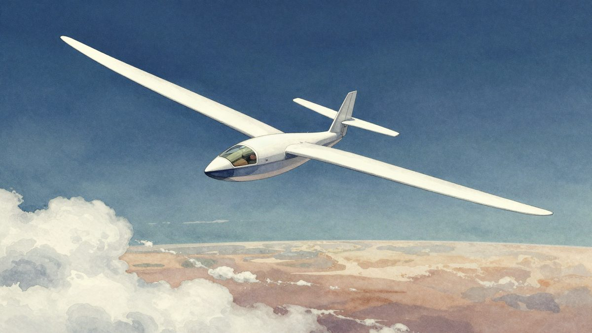

Helios Horizon: električni zrakoplov na solid-state baterijama popeo se na 17.200 stopa

Neprofitna inicijativa Helios Horizon provela je testne letove zrakoplova koji pogone isključivo solid-state baterije. Pilot Miguel Iturmendi popeo se na 17.200 stopa, oko 5.250 metara, i potrošio 36 posto baterije. Tim tvrdi da je srušio tri svjetska rekorda, a službena potvrda još nedostaje.
Helios Horizon, neprofitna zrakoplovna inicijativa, završila je kampanju testnih letova koja pokazuje da solid-state baterije mogu pogoniti dugotrajan let na velikoj visini. Osnivač i probni pilot Miguel Iturmendi na najboljem je letu zrakoplov podigao do 17.200 stopa, oko 5.250 metara, i pritom potrošio samo 36 posto kapaciteta baterije.
Tim tvrdi da je let srušio tri svjetska rekorda za električne zrakoplove lakše od 500 kilograma: za ukupnu visinu, za visinu horizontalnog leta i za vrijeme penjanja iznad 3.000 metara. Tu visinu Iturmendi je dosegnuo za 27 minuta. Letovima je svjedočio promatrač National Aeronautic Association, a rekordi još čekaju službenu potvrdu World Air Sports Federation.
"Uz veću gustoću energije i veću sigurnost solid-state baterija, elektrifikacija više nije ograničavajući faktor u zrakoplovstvu, nego omogućuje nove misije", rekao je Iturmendi. Smatra da na istoj konstrukciji može letjeti mnogo više, mnogo duže i uz puno nižu cijenu nego s motorom s unutarnjim izgaranjem.
Zrakoplov i baterije
Nove solid-state ćelije imaju oko 410 Wh/kg, otprilike 60 posto više od litij-ionskih baterija od 260 Wh/kg koje je tim koristio ranije. Zrakoplov navodno nije izgrađen od nule, nego je jako preuređen Pipistrel Taurus, lagani dvosjed, motorna jedrilica dugih krila i visoke aerodinamičke učinkovitosti.
Iturmendi ima veliko iskustvo u probnom letenju. Radio je na Solar Impulse 2, HondaJetu, za NASA-u i na projektu Perlan, gdje je jedrilicom bez motora doletio do 66.000 stopa. U svibnju je, kaže tim, izveo prvi let zrakoplova s pilotom koji pogone isključivo solid-state baterije.
Za pripremu na još rjeđi zrak Helios Horizon surađuje sa Školom zrakoplovnih znanosti John D. Odegard Sveučilišta u Sjevernoj Dakoti. Na letovima je bio eksperimentalni analizator plinova atmosferskog istraživača Shawna Wagnera, a Iturmendi je u sveučilišnoj hipobaričnoj komori testirao tlačna odijela i opremu za održavanje života.
Sljedeći koraci
Inženjeri će zrakoplov opremiti baterijama s 25 posto većom gustoćom energije. Cilj je u ranoj 2027. prijeći 40.000 stopa, dakle iznad visine na kojoj lete uobičajeni putnički zrakoplovi.
Iturmendi zatim planira Helios Horizon 2, tlačni zrakoplov za pilota i dva putnika koji bi redovito letio do 80.000 stopa. Zamišljen je dovoljno kompaktno da se može prevoziti u prikolici i puniti običnom izmjeničnom strujom. Takva visina otvara mogućnosti za mjerenja atmosfere, izviđanje i stratosferski turizam. Putnici bi jednom mogli kroz prozor vidjeti zakrivljenost Zemlje ispod crnine svemira, kaže Iturmendi.
Izvor: Interesting Engineering